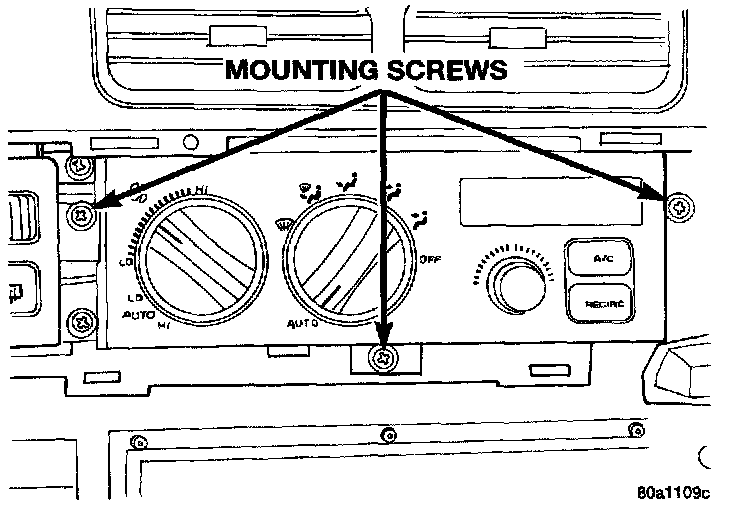
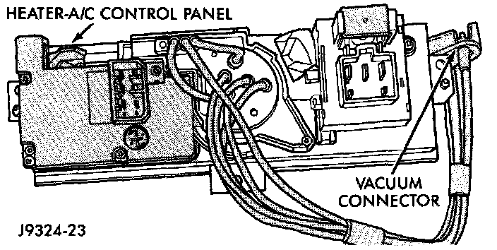

Blower Motor Switch: Service and Repair
The Blower Motor switch cannot be repaired and, if faulty or damaged, it most be replaced. The switch is serviced only as a part of the Heater-A/C control assembly.WARNING: ON VEHICLES EQUIPPED WITH AIRBAGS, REFER TO AIRBAGS SYSTEMS BEFORE ATTEMPTING ANY STEERING WHEEL, STEERING COLUMN, OR INSTRUMENT PANEL COMPONENT DIAGNOSIS OR SERVICE. FAILURE TO TAKE THE PROPER PRECAUTIONS COULD RESULT IN ACCIDENTAL AIRBAG DEPLOYMENT AND POSSIBLE PERSONAL INJURY.
REMOVAL
1. Disconnect and isolate the battery negative cable.
2. Remove the inboard switch pod bezel from the instrument panel. Refer to Switch Pod Bezel in instrument Panel, Gauges and Warning Indicators/Instrument Panel for the procedures.
Heater-A/C Control Remove/Install:

3. Remove the three screws that secure the heater-A/C control to the instrument panel.
Heater-A/C Control Connections - Typical:

4. Pull the heater-A/C control assembly away from the instrument panel far enough to access the connections on the back of the control.
5. Unplug the wire and/or vacuum harness connectors from the back of the heater-A/C control.
6. Remove the heater-A/C control from the instrument panel.
INSTALLATION
1. Plug the wire harness and/or vacuum harness connectors into the back of the heater-A/C control.
2. Position the heater-A/C control in the instrument panel and secure it with three screws. Tighten the screws to 2.2 N.m (20 in. lbs.).
3. Reinstall the inboard switch pod bezel onto the instrument panel. Refer to Switch Pod Bezel in Instrument Panel, Gauges and Warning Indicators/Instrument Panel for the procedures.
4. Connect the battery negative cable.